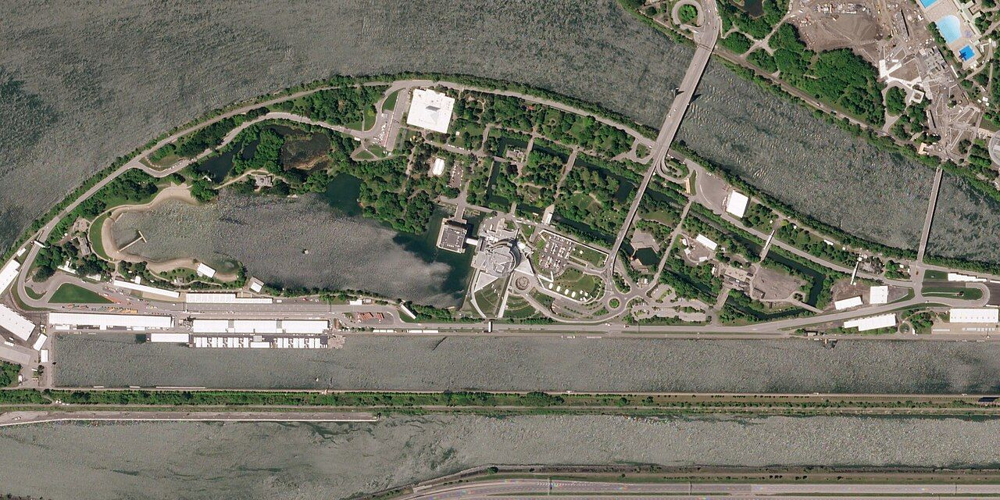
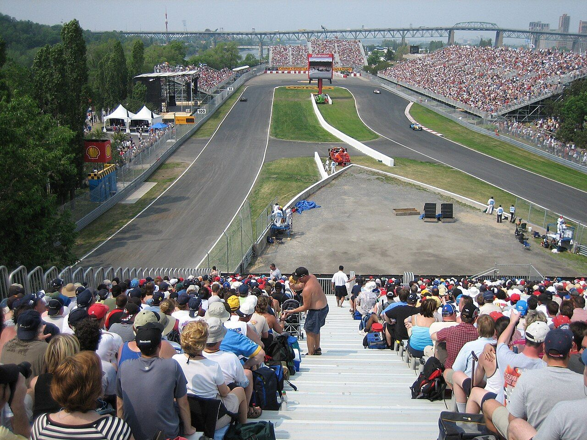
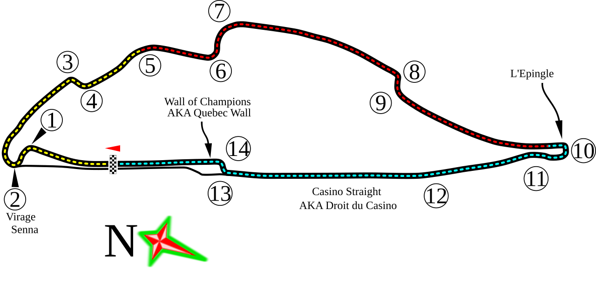
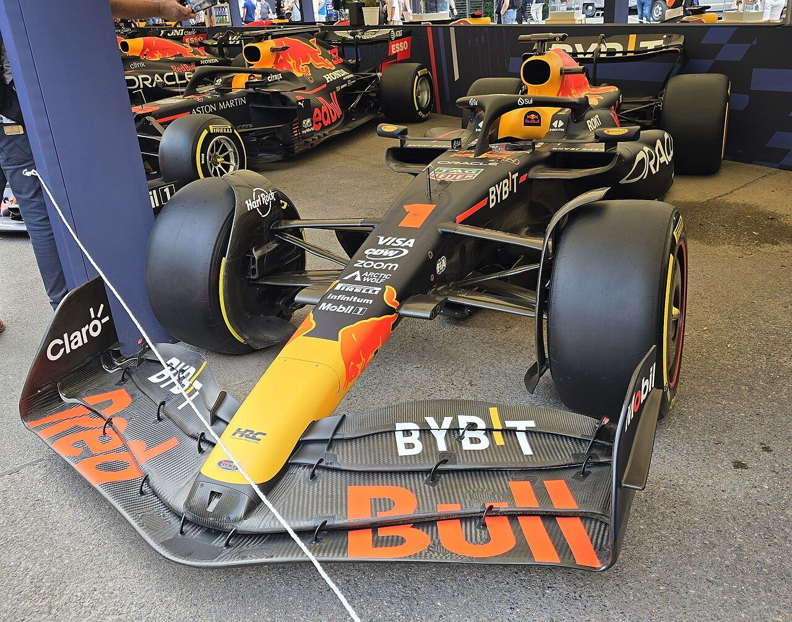
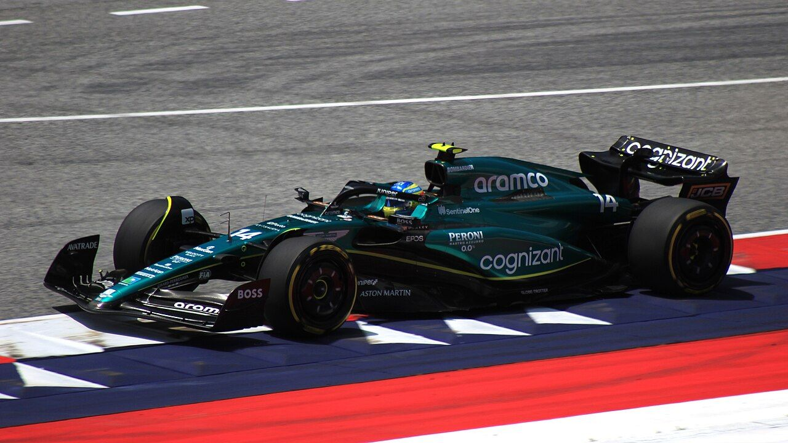
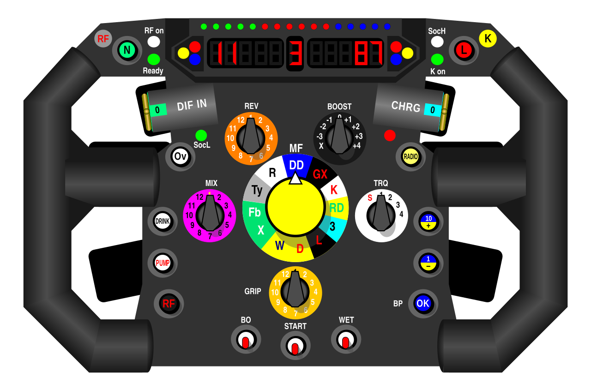
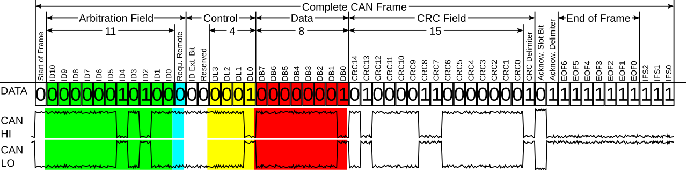
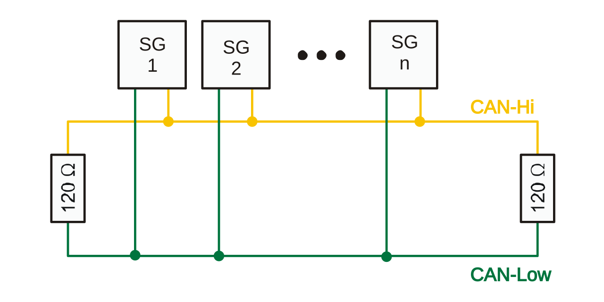
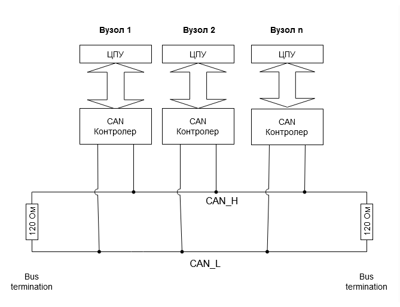
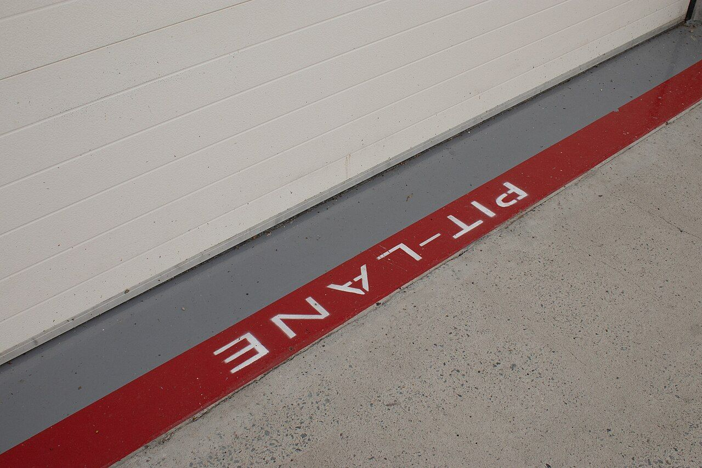

Every fastest lap of Montréal, on a CAN bus
Real telemetry from the 2023 Canadian Grand Prix is sampled from the car, packed into 8-byte CAN frames, sent across a simulated 500 kbit/s bus and logged at the pit wall. Every stage of that chain is a working simulation on this page, built on the actual race data.
Each label marks where a channel on the bus comes from. Tap one to see which bits it occupies.
3D model: Aston Martin AMR23 (2023) by Redgrund, CC BY 4.0, via Wikimedia Commons. Decimated, wheels separated, repainted.
The race behind the data
FastF1 reads Formula 1's live-timing archive. For the 70-lap Canadian Grand Prix it returns car telemetry at roughly 4 samples per second and positions at about the same rate. The project uses each driver's fastest lap. Pick a row to choose the two cars used in every simulation below: the first click sets car A, the second sets car B.
Classification & fastest laps
| Pos | Driver | Team | Fastest | Lap | Tyre | Trap | Status |
|---|

.jpg){kind=link}




Race story: position by lap
Hover a line to follow a car


.jpg){kind=link}
Ghost race of 20 fastest laps
All twenty fastest laps start together, so the order on track is the order of lap times. Car A drives the 3D car and the steering-wheel display; car B is the translucent ghost. The trace at the bottom is the exact byte stream the sender would put on the bus for car A, three frames per sample.


Timing tower
gap to leaderBus trace · car A
Track map
X / Y from F1_PositionChoosing the sample rate
FastF1 delivers car data at about 4 samples per second, one every 0.24 s. A braking zone lasts one to two seconds and the hairpin minimum lasts less than one, so the streaming rate has to keep every real sample. Drag the slider to thin the stream and see what a slower link would lose.
Speed trace, car A
The sender keeps every real sample and interpolates it onto a steady 10 Hz grid, so the receiver gets evenly spaced frames. Each sample also carries the car's own lap time and lap distance in F1_LapContext, so the pit wall never has to reconstruct distance from its own clock.
One sample, 64 bits
The live sample from the replay is packed into F1_CarTelemetry (ID 0x101). Signals use Intel byte order: bit 0 is the least significant bit of byte 0, and byte 7 holds a CRC-8 over the other seven. Click any bit to flip it and watch the end-to-end CRC-8 reject the frame.
Signals
F1_CarTelemetryData field
The whole frame on the wire
After five identical bits the transmitter inserts one opposite stuff bit (marked ▲) so receivers can keep their clocks aligned. The 15-bit CAN CRC protects the frame on the wire; the extra CRC-8 inside the data protects it end to end, through gateways and software queues.




Who talks first
CAN has no master. When several nodes start a frame at once, each sends its identifier bit by bit while listening. A 0 is dominant and overwrites a 1, so a node that sends 1 and hears 0 stops. The lowest ID wins without a single bit being lost, which is why session control sits at 0x010.
Arbitration, bit by bit
Press Step to put the first identifier bit on the bus.
Bus load
—Frame lengths are measured from the real Montréal frames after bit stuffing, not the worst case. Above about 70 % load, low-priority frames start to queue for noticeable time.


Knowing which car is talking
The receiver never infers a car from timing or order. Every stream opens with a SessionCtrl START frame naming the driver, and every sample repeats the number in LapContext and Position. A car that is missing, late or re-sent is still filed under the right name.
Session index at the pit wall
—Receiver state machine

.jpg){kind=link}
On the wire, the controller's own CRC-15 catches bit errors and the frame is resent automatically. The CRC-8 in byte 7 of every data frame guards the rest of the path: gateways, drivers and software queues. Raise the corruption rate to damage frames after the controller; watch the replay trace drop them rather than log a wrong value.
Where the time goes
Both laps are aligned on lap distance, the only fair axis. The bottom trace is the running time gap: when it rises, car B is losing time to car A. Hover to scrub both laps; the map shows who owns each of 25 mini-sectors.
Mini-sectors
—Corner by corner
Decisions behind the bus
Every choice in the message catalogue is sized against the real Montréal data. Each one is pinned by tests in python/tests and matlab/tests, and the same layout is implemented three times (Python, MATLAB, JavaScript) and checked byte for byte.
Run it yourself
No Vector hardware is needed. The Python demo runs the sender and receiver on an in-process virtual bus; the MATLAB replay decodes a recorded trace and runs in GNU Octave; the Simulink model plays back a real lap with core blocks only.
Python
27 tests# clone, install, run the hardware-free demo
git clone https://github.com/sundarrajnitish/F1-CAN-Telemetry-Lab
cd F1-CAN-Telemetry-Lab/python
pip install -r requirements.txt
python -m f1can demo --drivers 1,14,44
python -m f1can compare logs/driver_01_telemetry.csv \
logs/driver_14_telemetry.csv
pytest -qMATLAB / Octave
7 tests% toolbox-free replay of a recorded trace cd matlab CAN_Replay_Offline CAN_Driver_Analysis('logs/driver_01_telemetry.csv', ... 'logs/driver_14_telemetry.csv') F1_Telemetry_Model(14) % Simulink, real lap % live, with Vehicle Network Toolbox: CAN_Receive_Logger('Vector','Virtual 1',1)